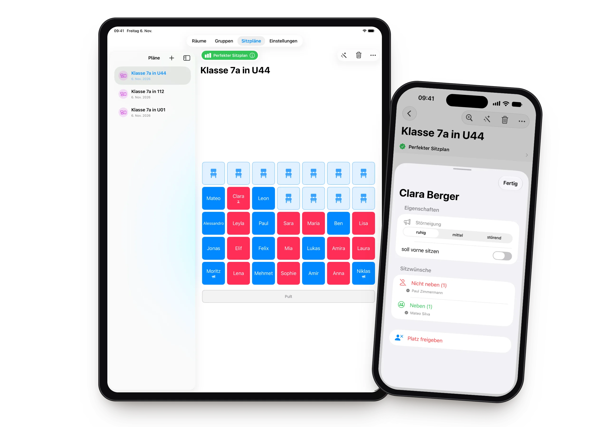
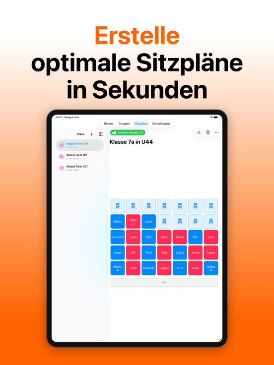
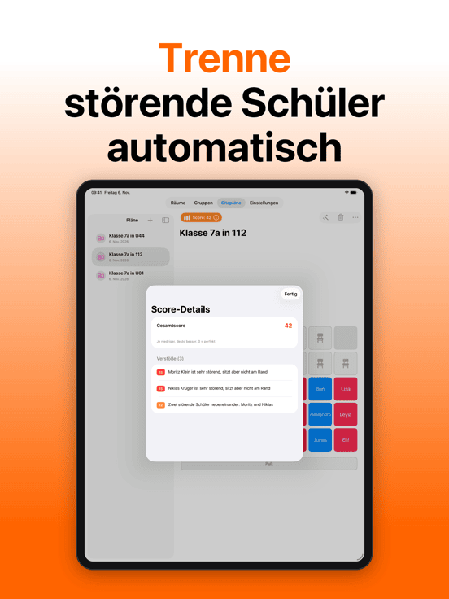
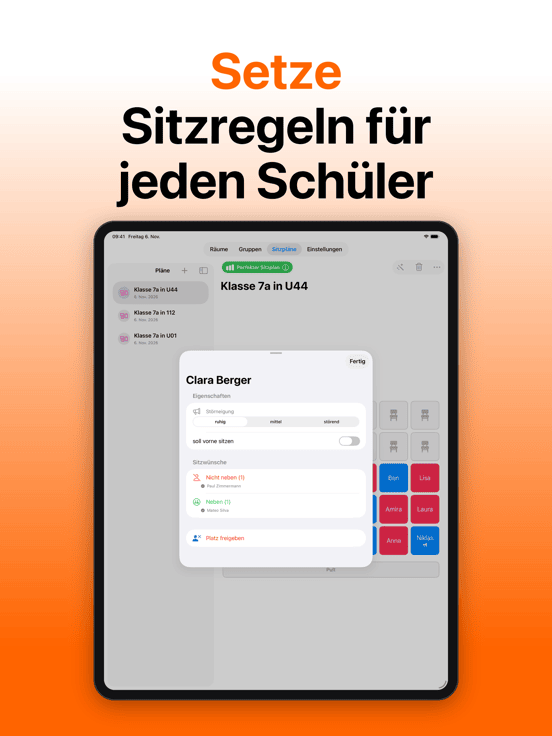
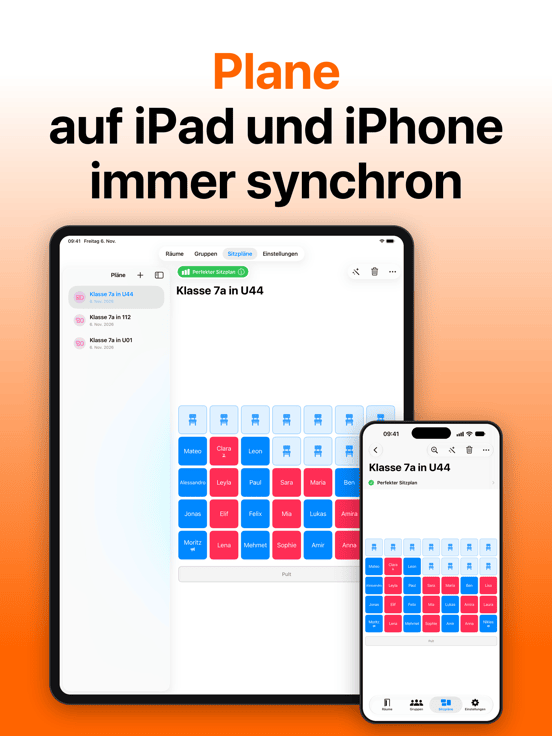

Platzwahl
Sitzpläne für Lehrkräfte, automatisch und fair verteilt.





Alles, was ein guter Sitzplan braucht.
Sitzplan auf Knopfdruck
Ein Tippen verteilt die ganze Klasse fair und nach deinen Regeln.
Dein Raum, exakt
Reihen, U-Form oder Gruppentische, dazu Pult und Türen an den Wänden: Jeder Klassenraum lässt sich nachbauen.
Regeln pro Kind
Störneigung, Wunschnachbarn, Trennungen und Plätze vorne fließen in die Berechnung ein.
Nachvollziehbarer Score
Ein Score zeigt, wie gut der Plan ist, und nennt jeden Verstoß einzeln.
Von Hand nachbessern
Schüler setzt du jederzeit per Drag & Drop um, der Score rechnet sofort mit.
Klasse aus Excel
CSV importieren, und die ganze Klasse ist in Sekunden angelegt.
iPad und iPhone
Mit iCloud-Synchronisierung hast du Räume, Klassen und Pläne auf all deinen Geräten.
Schülerdaten geschützt
Ohne Konto und ohne Tracking. In iCloud sind Namen und Eigenschaften Ende-zu-Ende-verschlüsselt.
Druckfertiges PDF
Jeder Plan lässt sich als PDF exportieren und ausdrucken.
In vier Schritten zum Plan.
Raum nachbauen
Sitze antippen oder ganze Bereiche mit dem Finger malen, Pult und Türen setzen.
Klasse anlegen
Namen eintragen oder per CSV importieren, Regeln setzen.
Zauberstab tippen
Der Algorithmus findet den bestmöglichen Plan.
Drucken
Als PDF exportieren. Neuer Plan? Ein Tippen genügt.
Zum Weiterlesen
- Sitzplan erstellenIn 5 Minuten zum fertigen Plan.
- Sitzplan-GeneratorWarum Zufall nicht reicht.
- Sitzordnung im KlassenzimmerReihen, U-Form, Gruppentische.
- Sitzplan GrundschuleWas in Klasse 1–4 zählt.
- Sitzplan-App für iPadApp statt Excel, mit Blick auf den Datenschutz.
- Classroom ManagementSitzplan, Gruppen und Lautstärke.
Häufige Fragen
Für wen ist Platzwahl gedacht?
Für Lehrkräfte aller Schularten, die Sitzpläne schnell und fair erstellen möchten — ohne stundenlanges Hin-und-her-Schieben oder Tabellen-Gefummel.
Wie erstellt Platzwahl automatisch einen Sitzplan?
Die App verteilt Schülerinnen und Schüler anhand individueller Regeln — Störneigung, Sitzwünsche, Jungen/Mädchen-Trennung — optimal auf die verfügbaren Plätze. Ein Score zeigt auf einen Blick, wie gut der Plan ist und welche Regeln noch verletzt werden.
Werden Schülerdaten gespeichert oder übertragen?
Nur wenn du es willst. Von sich aus speichert Platzwahl alle Namen und Regeln nur auf deinem Gerät. Schaltest du die iCloud-Synchronisierung ein, liegen Räume, Klassen und Pläne zusätzlich in deiner privaten iCloud. Namen und Eigenschaften der Schülerinnen und Schüler sind dabei Ende-zu-Ende-verschlüsselt. crabucate hat in keinem Fall Zugriff darauf. Details stehen in der Datenschutzerklärung.
Läuft Platzwahl auf iPhone und iPad?
Ja, auf beiden ab iOS 17. Mit Platzwahl Pro gleichen sich Räume, Klassen und Sitzpläne über iCloud zwischen deinen Geräten ab, sodass du den Plan am iPad erstellst und im Klassenraum auf dem iPhone dabeihast.
Kann ich mehrere Klassen und Räume verwalten?
Ja. Kostenlos legst du einen Raum, eine Klasse und einen Sitzplan an. Mit Platzwahl Pro sind es beliebig viele, jeweils mit eigenen Sitzplänen.
Gibt es einen PDF-Export?
Ja, mit Platzwahl Pro. Jeder Sitzplan lässt sich als PDF exportieren oder direkt drucken, mit Pult und Türen an der richtigen Stelle.
Was kostet Platzwahl?
Laden ist kostenlos. Ohne Pro legst du einen Raum, eine Klasse und einen Sitzplan an und setzt die Schüler von Hand. Platzwahl Pro schaltet die automatische Berechnung, PDF-Export und Drucken, die iCloud-Synchronisierung und beliebig viele Räume, Klassen und Pläne frei. Die Preise stehen in der App und im App Store.
Kann ich eine ganze Klasse aus Excel importieren?
Ja. Exportiere die Klassenliste als CSV-Datei aus Excel oder Google Sheets und importiere sie direkt in Platzwahl — die ganze Klasse ist in Sekunden angelegt.
Hilfe & Support
Wie muss die CSV-Datei aussehen?
Am einfachsten mit den Spalten „Vorname“ und „Nachname“, optional „Geschlecht“. Semikolon, Komma und Tabulator als Trennzeichen erkennt Platzwahl selbst. Eine Liste mit einem Namen pro Zeile im Format „Nachname, Vorname“ funktioniert ebenfalls. Vor dem Import zeigt die App eine Vorschau.
Die iCloud-Synchronisierung zeigt meine Daten nicht auf dem anderen Gerät.
Prüfe auf beiden Geräten, dass du mit derselben Apple-ID angemeldet bist und der iCloud-Schlüsselbund eingeschaltet ist; ohne ihn lassen sich die verschlüsselten Schülerdaten nicht entschlüsseln. Schalte die Synchronisierung dann in Platzwahl unter Einstellungen auf beiden Geräten ein. Der erste Abgleich kann einige Minuten dauern.
Ich habe Pro gekauft, aber die App zeigt es nicht an.
Öffne in Platzwahl die Einstellungen und tippe auf „Käufe wiederherstellen“. Die App meldet, ob es geklappt hat. Achte darauf, mit der Apple-ID angemeldet zu sein, mit der du gekauft hast.
Wie kündige ich das Abo?
Abos verwaltet Apple: in den iOS-Einstellungen unter deinem Namen → Abonnements → Platzwahl. Bis zum Ende des bezahlten Zeitraums bleibt Pro aktiv, deine Räume, Klassen und Pläne bleiben erhalten.
Eine Frage ist nicht dabei?
Schreib an info@crabucate.de, ich antworte in der Regel innerhalb von ein, zwei Tagen.